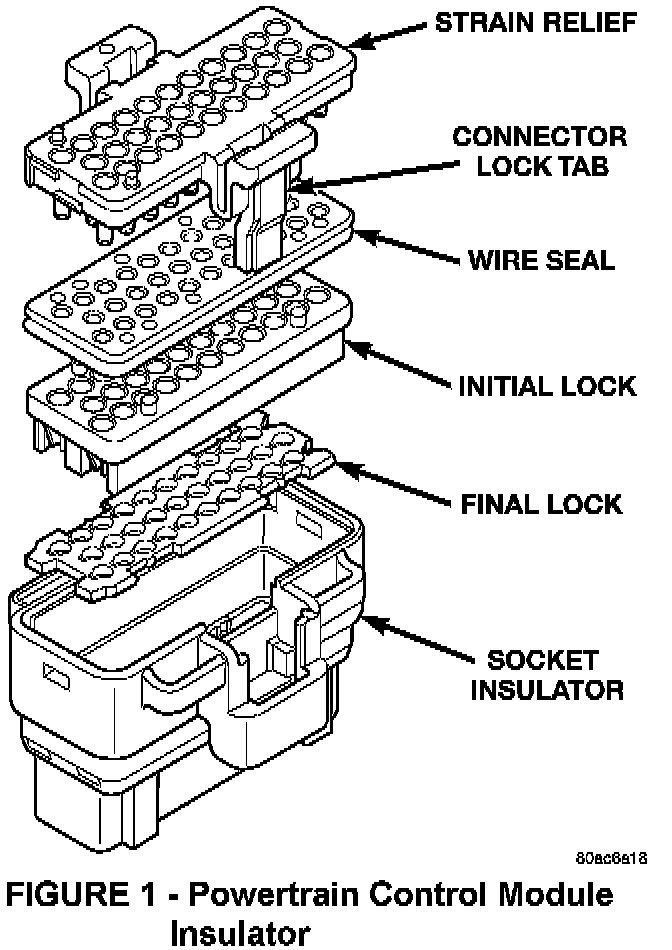
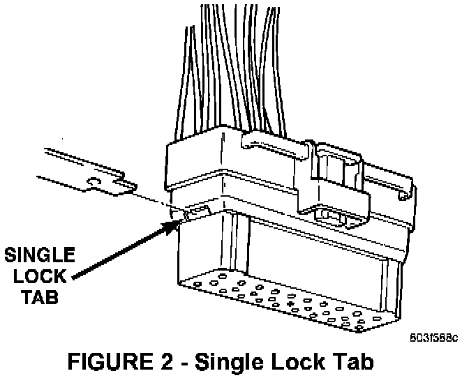
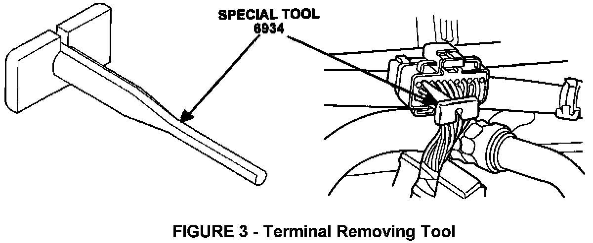
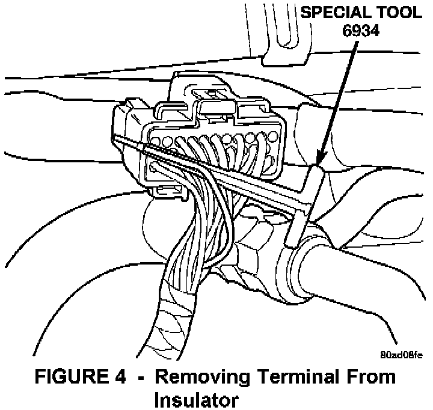
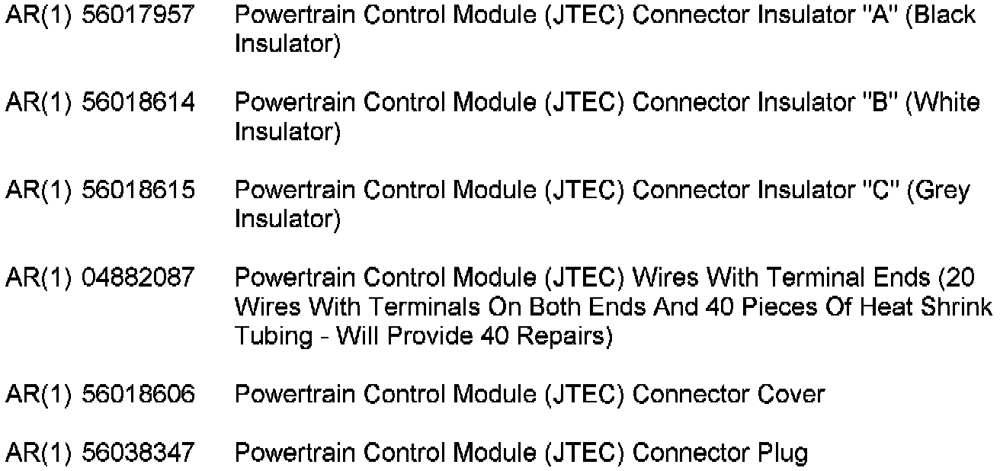
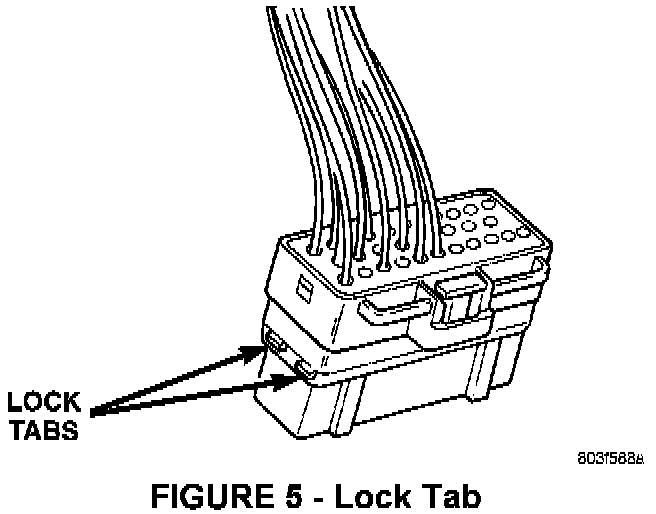
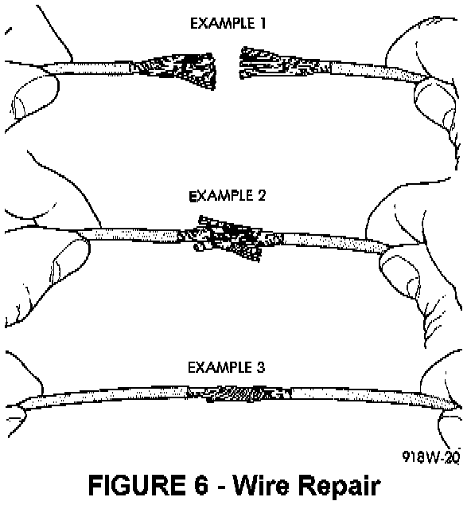

Diagnosis
Inspection of the connector begins with a thorough inspection of the insulator.1. Record the radio station presets.
2. Disconnect and isolate the battery negative cable (both batteries should be disconnected if the vehicle is equipped with a 5.9L Cummins Diesel).
3. Disconnect the connector from the PCM.

4. Inspect the connector lock tab on the side of the insulator (Figure 1) for damage and replace the insulator if damaged is identified.
5. Gently pull on the wires of the connector one at a time. The initial and final locks will need to be inspected if the wire pulls out of the insulator.

6. Push in the single lock tab on the side of the insulator (Figure 2).

7. Then, insert the probe of special tool 6934 (Figure 3) into the back of the insulator cavity.

8. Grasp the wire and tool 6934 and slowly remove the wire and terminal from the insulator (Figure 4). Then, remove the strain relief and wire seal (Figure 1).
9. Inspect the initial and final locks of the insulator (Figure 1) for damage. Replace the insulator if there are any signs of damage.
10. Inspect all wire terminals for corrosion. If corrosion is evident, replace the terminal ends and the insulator.
11. To verify how secure the cavity of the terminal fits onto the PCM pins, insert and remove the wire end terminal onto the mating pin of the PGM. Then, rotate the terminal 90°, 180°, and 270° while inserting and removing the terminal from the pin. If any connection is loose, replace the wire end terminal.
12. Inspect and replace the PCM connector cover or connector plug if the locking tabs are damaged.
Perform the following Repair Procedure if damage or wear is identified in any component of the insulator or terminals (including corrosion on the terminal).

PARTS REQUIRED:
REPAIR PROCEDURE:
This bulletin involves replacing either the insulator or terminals of the PCM connectors.
Insulator Replacement
NOTE:
THIS PROCEDURE ASSUMES THAT THE WIRE END TERMINALS WERE ALREADY REMOVED WHEN THE DIAGNOSIS WAS PERFORMED.
1. Utilizing the appropriate insulator (see Parts Required list), install the wire and terminal into the appropriate cavities of the insulator. Refer to the appropriate Service Manual, Group 8W-80, for proper terminal-to-cavity locations in the connector. Fully seat all terminals into the insulator.

2. Push in the two lock tabs on the side of the connector (Figure 5).
3. Install the connector into the proper cavity of the PCM.
4. Connect the battery negative cable (both batteries should be connected if the vehicle is equipped with a 5.9L Cummins Diesel).
5. Reset the clock and reprogram the radio stations to the presets recorded in step 1 of the Diagnosis.
Wire End Terminal Replacement
NOTE:
THIS PROCEDURE ASSUMES THAT THE DAMAGED OR CORRODED WIRE END TERMINAL WAS ALREADY REMOVED WHEN THE DIAGNOSIS WAS PERFORMED.
1. The wire of the terminal end that needs repaired will need to be cut and discarded. Measure approximately three inches down the wire from the end of the terminal and cut the wire.
2. Cut one of the wires with terminal ends from package P/N 04882087 in half. This action will allow for two repairs if necessary.
3. Remove approximately one inch of insulation from the wires that are being spliced together.
4. Place a piece of heat shrink tubing over one of the wires. Make sure the tubing will be long enough to cover and seal the entire repair.

5. Spread the strands of the wire apart on each part of the exposed wire (Example 1) (Figure 6).
6. Push the ends of the two wires together until the strands of wire are close to the insulation (Example 2) (Figure 6).
7. Twist the wires together (Example 3) (Figure 6).
8. Solder the connection together using rosin core type solder only. Do not use acid core solder.
9. Center the heat shrink tubing over the joint and heat the tubing using a heat gun. Heat the joint until the tubing is tightly sealed and sealant comes out of both ends of the tubing.
10. Secure the wires to the existing harness to prevent chafing or damage to the insulation.
11. Install the wire terminal end into the appropriate cavity of the insulator. Fully seat all terminals into the insulator.
12. Push in the single lock tab on the side of the connector (Figure 5).
13. Install the connector into the proper cavity of the PCM.
14. Connect the battery negative cable (both batteries should be connected if the vehicle is equipped with a 5.9L Cummins Diesel).
15. Reset the clock and reprogram the radio stations to the presets recorded in step 1 of the Diagnosis.
POLICY: Information Only